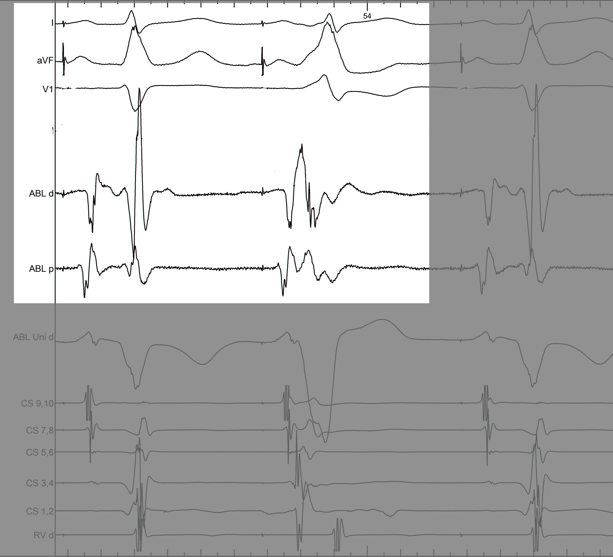

Mapping and ablation of left sided pathways - How do I do it
Raja Selvaraj, JIPMER
Introduction
Introduction
- 50 to 60% of all pathways
- Highest success rate
- Lowest recurrence rate
Points
- Approach - Retrograde vs transseptal
- Mapping - Coronary sinus
- Mapping - Separating A and V
- Difficult / failed ablations
Retrograde vs transseptal
Approaches
Retrograde or Transseptal - Evidence
- Similar success rate
- Similar procedure / fluoro time
- More complications with retrograde approach
Manolis AS, Wang PJ, Estes NA 3rd. Radiofrequency ablation of left-sided accessory pathways: transaortic versus transseptal approach. Am Heart J. 1994 Nov;128(5):896-902.
Choosing an approach
- Personal preference
- Train in both
- May have to choose according to patient
- Pediatric / Peripheral arterial disease / Aortic valve disease
- Kyphoscoliosis
- Transseptal - more mobility, less stability
- Ready to switch
Coronary sinus
CS located away from annulus
Shinbane JS, Lesh MD, Stevenson WG et al. Anatomic and electrophysiologic relation between the coronary sinus and mitral annulus: implications for ablation of left-sided accessory pathways. Am Heart J. 1998 Jan;135(1):93-8
CS LA connections
Chauvin M, Shah DC, Haïssaguerre M et al. The anatomic basis of connections between the coronary sinus musculature and the left atrium in humans. Circulation. 2000 Feb 15;101(6):647-52.
LA - CS block
CS ventricular connections
- About a third of all posteroseptal / left posterior APs
- 70% of them had no diverticulum
Sun Y, Arruda M, Otomo K et al. Coronary sinus-ventricular accessory connections producing posteroseptal and left posterior accessory pathways: incidence and electrophysiological identification. Circulation. 2002;106(11):1362-7.
Mapping - Rhythm
Mapping - Options
- Atrial activation during ventricular pacing
- Can intermittently check in sinus rhythm / atrial pacing
- May have to pace from RVOT / LV
- Ventricular activation during atrial pacing / sinus rhythm
- Ablation during tachycardia
RVOT pacing
LV pacing
Entrained tachycardia
Mapping - Differentiating A and V
Separating A and V

Information from other electrodes
Unipolar

Non preexcited beats

Mapping - Pseudodisappearance
Raja Selvaraj et al. Pseudodisappearance of atrial electrogram during accessory pathway ablation, EP Europace 2012;14(7):993
Simultaneous pacing
Nakao, Seto, Iliev et al. Simultaneous Atrial and Ventricular Pacing to Facilitate Mapping of Concealed Left-Sided Accessory Pathways. PACE 2002; 25:922–928
Reversal of activation in oblique pathway
Otomo K, Gonzalez MD, Jackman WM et al. Reversing the direction of paced ventricular and atrial wavefronts reveals an oblique course in accessory AV pathways and improves localization for catheter ablation. Circulation. 2001 Jul 31;104(5):550-6.
Difficult / failed ablations
Reasons for failed ablation
- Inability to position catheter at target site
- Instability of catheter
- Mapping error due to oblique course
- Localisation errors
- Epicardial location
- Recurrent AF
- Unusual locations
Morady F, Strickberger A, Man KC et al. Reasons for prolonged or failed attempts at radiofrequency catheter ablation of accessory pathways. J Am Coll Cardiol. 1996;27(3):683-9.
Stability
- Sheath
- Catheter course
- Retrograde approach
- Pacing if possible
- Entrain if during tachycardia
Oblique pathways
Oblique course
- Misleading VA interval
- Obscures AP potential
- Change pacing location
- Map for earliest activation (A/V)
Isthmus block
Isthmus block
Luria DM, Nemec J, Etheridge SP et al. Intra-atrial conduction block along the mitral valve annulus during accessory pathway ablation: evidence for a left atrial "isthmus". J Cardiovasc Electrophysiol. 2001;12(7):744-9.
Isthmus block
AF
CS ventricular connection - CS muscle potential
LAA pathway
Summary
Summary
- Left sided pathways in general are easiest to ablate and have best long term results
- However, may occasionally present a challenge
- Use of different pacing patterns to differentiate A and V
- Mapping for earliest A / V
- Use of unipolar mapping
- Awareness of alternate pathway locations